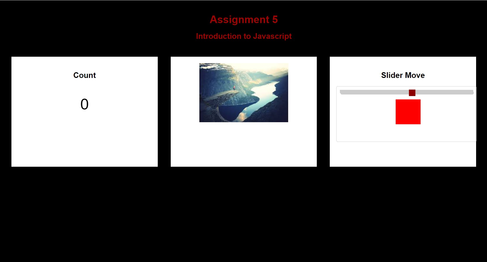
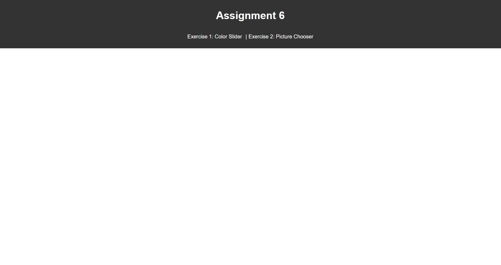
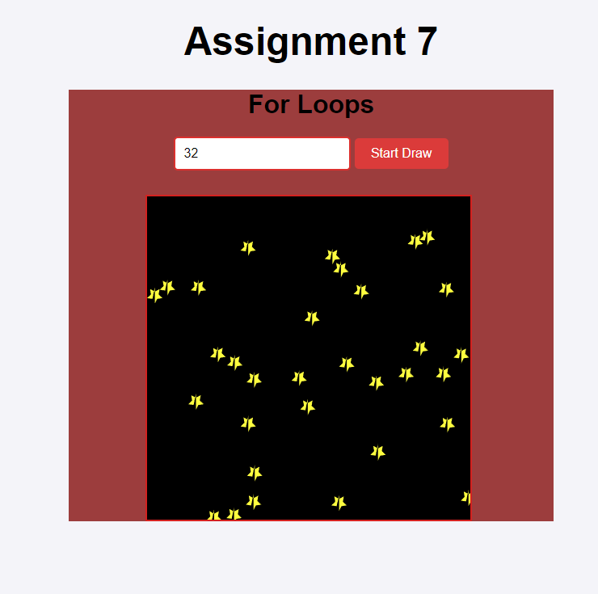
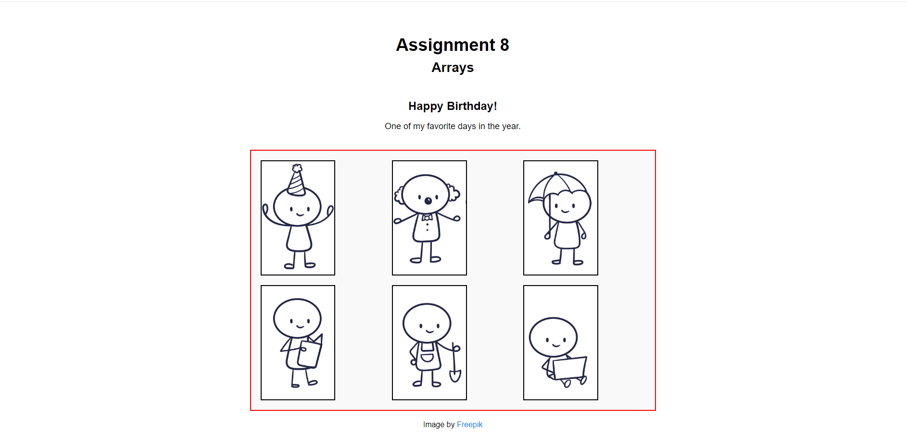
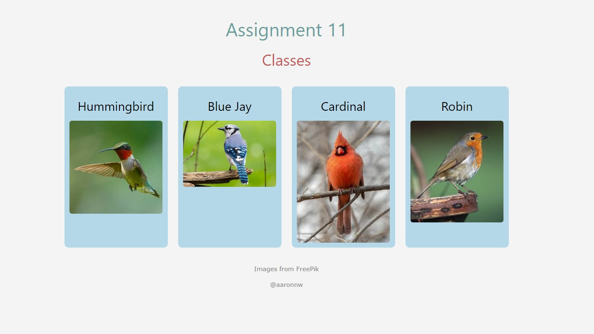

Assignments
Assignment 1 – Basic HTML

For this assignment, I built a simple starter website as I got more comfortable with HTML.
Assignment 2 – Basic CSS

In this assignment, I styled a simple HTML page using CSS.
Assignment 3 – Page Layout

In this assignment, I created a webpage using CSS Flexbox for layout.
Assignment 4 – Page Layout

For this assignment, I recreated the University of South Carolina's homepage.
Assignment 5 – Page Layout
For this assignment, I used Javascript to make a counter that increases when clicked, a random image generator, and a square that reacts to a slide bar.
Assignment 6 – Page Layout
For this assignment, I used javascript to create a color slider that changed the background color when moved. I also created a picture chooser which displayed an image at whatever size the user selects.
Assignment 7 – For Loops
For this assignment, I used Javascript For Loops in order to populate and keep count of a box with stars in it. I also added arrows so that the user can change the number of stars by clicking or entering a number. The feature will not allow you to enter a negative number of stars.
Assignment 8 – Arrays
For this assignment, I used a Javascript Associative Array in order to allow the user to interact with images being stored in the array. When you hover over an image, it will expand, and if you click on it, the title and description of the image will appear.
Assignment 9 – Classes
For this assignment, I created a class used to include functionality on four separate images of birds. The purpose was to control the user experience so that upon clicking a picture of the bird a full description of the bird will appear. This can also be closed so that the user can click on a separate bird and see unique information.
Projects
Project 1 – Wireframe and Topic
Topic: Build a responsive homepage
Project 2 – Atlanta Sports Wireframe
Wireframe for the Atlanta Sports Project